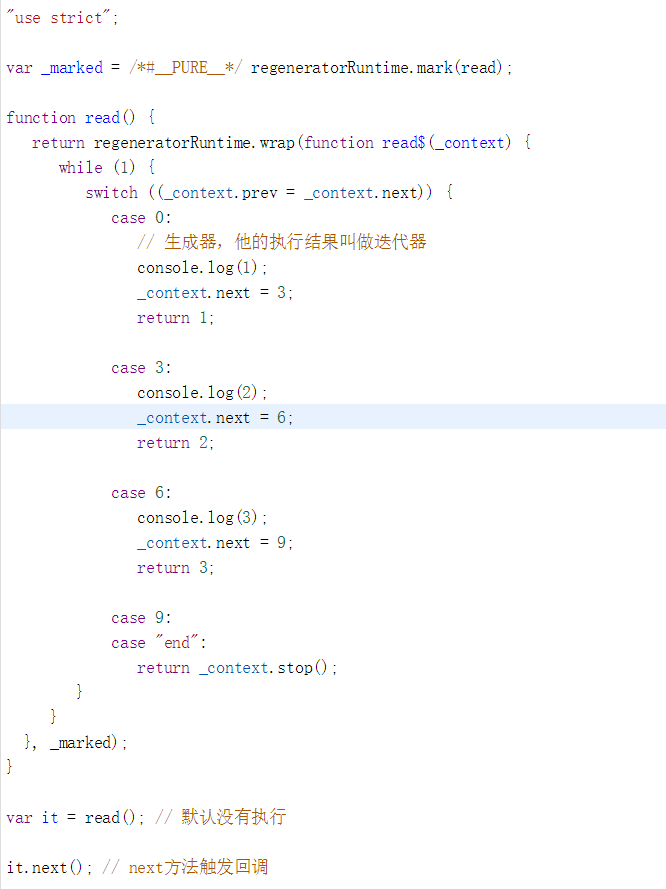

日常的学习笔记，包括 ES6、Promise、Node.js、Webpack、http 原理、Vue全家桶，后续可能还会继续更新 Typescript、Vue3 和 常见的面试题 等等。
同步阻塞与异步非阻塞
在了解异步的发展之前，我们要先清楚一个概念。那就是 同步异步与阻塞。
在执行代码的过程中，我们可能调用了某个方法。在调用方法时，如果方法没有执行完毕的话，后续的其他代码就无法向下执行，那么我当前的状态就是 阻塞态。 反之，便是 非阻塞态。
通过上述描述我们清楚了一个道理，那就是 阻塞与非阻塞指的是调用方的状态。
而针对于被调用方 ，延迟发送结果我们就可以称为 异步 ，而实时发送结果我们就可以称为 同步 。同步与异步指的是被调用方的状态。
所以在实际概念中，同步非阻塞是可能存在的，但异步阻塞是一定不存在的。
Promise 最早是为了解决异步的回调地狱问题，但是却并没有从根本上解决这个问题，所以我们可以考虑使用 Generator。
Generator
参考文献 Generator函数的含义与用法
Generator 是协程在 ES6 的实现，最大特点就是可以交出函数的执行权（即暂停执行）。
基础语法
在普通函数中，我们可以利用 return 将函数的控制权交还给被调用的代码。
1 | function read(n) { |
函数在执行过程中，如果没有遇到return语句（函数末尾如果没有return，就是隐含的return undefined;），控制权无法交回被调用的代码。
而我们的 Generator 的语法与函数相似，却又有一些不同。
Generator由function*定义（注意多出的*号），并且，除了return语句，还可以用yield返回多次。
1 | function* read() { // 生成器，他的执行结果叫做迭代器 |
定义的函数我们可以叫他 生成器，其执行结果我们可以叫做 迭代器。
实现原理
关于 Generator 的实现原理，我们可以从 babel官网 上进行查看。

通过打印，我们可以很清楚的发现一件事情。 那就是 Genetator 实现原理的核心方法就是 switch...case。
我们每次在执行代码时，会在遇到 yield 时，将控制权交还给被调用的代码。等待下一次 .next() 方法，再执行后续的代码。
实际案例
假设我们现在有一个文件 a.txt，里面有 *b.txt的路径（如 ./b.txt）， 再将此内容作为参数，继续请求路径为 *b.txt 的文件，得到结果 b。
实现上述需求，利用 Generator 可以解决我们在请求过程中的回调地狱问题。
1 | const util = require('util'); |
我们可以发现，发送请求时，我们利用 Generator 对异步请求进行了封装，使代码看起来更整洁了。
但是在调用的时候，依旧存在回调地狱的问题。
调用的回调地狱问题，我们可以使用 tj/co 库来进行处理。
这个库的实现原理，就是实现 async/await 的核心思路。
co插件
使用co库，可以直接将 Generator 函数的最终结果返回，而且会使代码看起来更简洁优雅。
npm install co 先安装插件库。
1 | const co = require('co'); |
直接会将结果返回。
实现原理
1 | function co(it) { |
async/await
还是参考上面那个例子。
1 | const util = require('util'); |
async/await 的实现思路就是 Generator，将 Generator 中的 function * 替换成 async function ，把 yield 替换成 await 。
1 | async function read() { |
这样我们就可以直接输出最终结果。
可以说 async/await 是目前解决回调地狱问题的最优方案。
本篇文章由莫小尚创作，文章中如有任何问题和纰漏，欢迎您的指正与交流。
您也可以关注我的 个人站点、博客园 和 掘金，我会在文章产出后同步上传到这些平台上。
最后感谢您的支持！